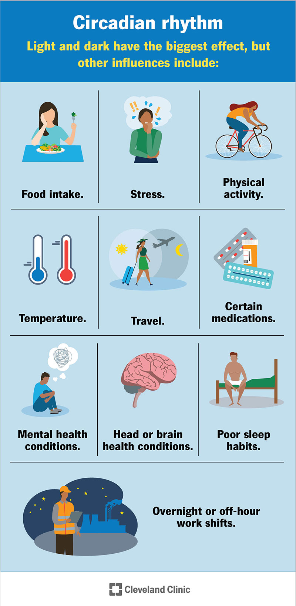

Your Sleep Debt Score: A 7-Day Tracker Challenge

Most people are sleep-bankrupt. Let me show you how to check your balance.
I don't mean that in a dramatic way. I mean it literally. Sleep debt is a real thing — a measurable, cumulative deficit that affects your reaction time, your memory, your immune system, and your mood. And the scary part is that most people don't know they have it. Because the sleep-deprived brain is terrible at judging how sleep-deprived it is. There's a famous study where people who slept five hours a night for two weeks said they felt "fine" but performed as badly on cognitive tests as people who hadn't slept in forty-eight hours. That was me for about three years of my life. I was walking around thinking I was fine. I was not fine.
When I first calculated my sleep debt, I literally sat down. It was 2018, before Leo was born, back when I thought I had my sleep under control. I had been tracking my sleep for a month as part of a personal experiment. My target was seven and a half hours per night — five cycles. My actual average was six point one hours. That's one point four hours of debt per night. Over thirty days, that's forty-two hours of debt. Forty-two hours. That's almost two full days of missed sleep. No wonder I was snapping at my husband and drinking three cups of coffee before noon.
Here's the thing about sleep debt: you can't just "sleep it off" on the weekend. If you owe forty-two hours, sleeping ten hours on Saturday doesn't erase it. Debt repayment is slow — about one to two hours of extra sleep per day, max. If you try to repay faster, you'll just feel groggy and mess up your circadian rhythm. So if you have a huge debt, it might take weeks to fully repay. That sounds depressing, but here's the good news: you don't need to fully repay your debt to feel better. Even reducing your debt by twenty to thirty percent will improve your alertness and mood. You just need to know where you stand.
So let's find out.
Here's how to use it. For seven days, you're going to do one simple thing: write down your bedtime, your wake-up time, and how many times you woke up during the night. You don't need a fancy tracker. A notebook next to your bed is fine. At the end of the week, you'll enter those numbers into the debt tracker. It'll calculate your average sleep, compare it to your target — I recommend starting with seven and a half hours or five cycles, then adjust based on how you feel — and give you a debt number.
But here's the trick: don't just calculate your debt once. Do it every day for a week. The daily check-in is what changes behavior. Because when you see "debt: plus one point two hours" on Tuesday morning, you might decide to go to bed thirty minutes earlier on Tuesday night. That's the whole point. Not guilt. Not shame. Just awareness.
I tried this myself, and it was uncomfortable at first. The first three days, my debt was over one hour each night. I felt defensive. "I'm busy," I told myself. "I can't go to bed earlier." But by day four, I started noticing patterns. My debt was highest on Wednesdays because I had a late meeting on Tuesdays. So I told my team I needed to move that meeting thirty minutes earlier. They said yes. That one change cut my weekly debt by two hours. I had been suffering for months because I never asked.
A guy named Marcus — not the same Marcus from before, a different one — was a paramedic. He worked twelve-hour shifts, sometimes overnight. His sleep schedule was a disaster. We used the debt tracker for two weeks. His average debt was two point three hours per night. That's not sleep debt. That's sleep bankruptcy. He told me, "I feel like I'm dying." He wasn't exaggerating. Chronic sleep debt of that magnitude increases your risk of heart disease, diabetes, and depression. We made a plan: he would prioritize sleep on his days off — no errands, no scrolling, just rest — and he would take twenty-minute naps during his breaks on shift. Within a month, his debt dropped to one point one hours per night. He said he stopped feeling like he was dying. He started feeling just regular tired. That's progress.
Now, here's a question I get a lot: how do you know your target sleep? Most people say "eight hours" because that's what they've been told. But eight hours might be wrong for you. Some people need seven. Some need nine. The only way to find your target is to experiment. Pick a bedtime, sleep without an alarm for a few days — weekend is good — and see when you naturally wake up. Do that for three mornings and average the wake-up time. That's your natural sleep duration. That's your target.
My husband thought his target was eight hours. He did the no-alarm experiment and woke up after seven hours and fifteen minutes, feeling great. He had been forcing himself to sleep an extra forty-five minutes every night, which just made him groggy. Now he sleeps seven hours and feels better. Stop forcing sleep you don't need.
But let's say you already know you have a debt problem. What do you do about it? You can't just "sleep more" — that's not specific enough. You need a repayment plan.
Here's the plan I give my clients:
Week one: add fifteen minutes to your sleep each night. That's it. Go to bed fifteen minutes earlier or wake up fifteen minutes later. Fifteen minutes is small enough that you barely notice it, but over a week that's one point seven five extra hours. That's meaningful.
Week two: add another fifteen minutes, if you can. Now you're at thirty minutes extra per night. If you can't — because of work or kids — hold steady at fifteen. Don't push yourself into stress.
Week three: take a one-hour nap on Saturday or Sunday. Not both days — just one. A ninety-minute nap is better, but an hour is fine if that's all you have. This is your weekly "catch-up."
Week four: recalculate your debt. You'll probably see it drop by thirty to fifty percent. Then decide if you want to keep going or maintain.
Most people stop after week four. They don't need to fully repay their debt. They just need to get out of the danger zone. That's fine. Perfect is the enemy of good.
I also want to mention something called "sleep quality versus sleep quantity." You can sleep eight hours of garbage sleep and still have debt, because debt is about restorative sleep, not just time in bed. If you wake up five times a night, your sleep is fragmented, and your debt won't clear. That's why I recommend tracking your sleep quality alongside your debt.
Take that quiz on day one of your challenge and again on day seven. If your sleep quality improves, your debt will feel smaller even if the hours don't change much. That's because high-quality sleep is more restorative per hour than low-quality sleep. So if you can't add more hours, work on quality: dark room, cool temperature, no phone in bed, same bedtime every night.
One of my favorite success stories is a woman named Patricia — I mentioned her before, the single mom with two jobs. She couldn't add more sleep hours because she was already at her limit. But she worked on quality: she bought blackout curtains — fifteen dollars on Amazon — started using a white noise app, and put her phone in the kitchen instead of her bedroom. Her sleep quality score went from forty-eight to sixty-seven in two weeks. Her debt didn't change much — she still slept about five and a half hours per night — but she felt fifty percent better. Because the sleep she was getting was actually deep and restorative, not fragmented garbage.
Now, a warning. Don't obsess over your debt number. That's the trap. Some people see a debt of twenty hours and panic. They try to sleep twelve hours on Saturday, which just makes them groggy and throws off their schedule for the next week. The debt tracker is a tool, not a judge. It's there to show you trends, not to make you feel guilty.
A client of mine checked his debt every morning and would get anxious if the number was red. He started sleeping worse because of the anxiety. I told him to check once a week instead of every day. His sleep improved immediately. Less data, less stress.
If you're the anxious type, do the challenge for seven days, then put the tracker away. Come back in a month. You don't need constant monitoring. You need a few data points to make adjustments.
Another thing that helps with debt is finding the right bedtime. If you're going to bed at the wrong time, you might be lying awake for thirty to sixty minutes, which adds to your debt because you're "in bed" but not sleeping. The bedtime finder can help with that.
I've seen people cut their sleep debt in half just by shifting their bedtime thirty minutes earlier or later. Not because they slept more hours, but because they stopped lying awake. Those waking hours count as debt too. If you're in bed but not sleeping, you're accruing frustration, not rest.
So here's your challenge for the next seven days. Get a notebook. Every morning, write down: what time you went to bed, what time you think you fell asleep — estimate is fine — how many times you woke up, what time you woke up for good, and how you feel on a scale of one to ten. At the end of the week, enter it into the debt tracker. Then make one small change based on what you see. Not ten changes. One.
Most people try to fix everything at once. They buy a new mattress, new pillows, blackout curtains, a white noise machine, blue light glasses, and a sleep tracking ring. Then they do none of it consistently. That's not a plan. That's shopping. Pick one thing: bedtime consistency, or light management, or cutting caffeine after 2 PM. Do that for two weeks. Then add another thing.
I did this myself after Leo was born. My debt was astronomical — I think around fifty hours over two months. I didn't try to fix it all at once. I started with one thing: no phone in bed. That was hard. I would reach for my phone automatically. I put it in the bathroom. After a week, I stopped reaching. Then I added a consistent wake-up time, even on weekends. Then I added blackout curtains. Over three months, my debt went from fifty hours to about twelve. I didn't feel perfect, but I stopped feeling like a zombie.
You don't need to be perfect. You just need to be better than last week.
P.S. I tried the "sleep bank" concept where you "deposit" extra sleep before a busy week. It doesn't work. You can't store sleep like fat. You can only pay down debt after it happens. So don't bother sleeping ten hours on Sunday to prepare for a stressful Monday. It won't help. Spend that time meal-prepping instead.